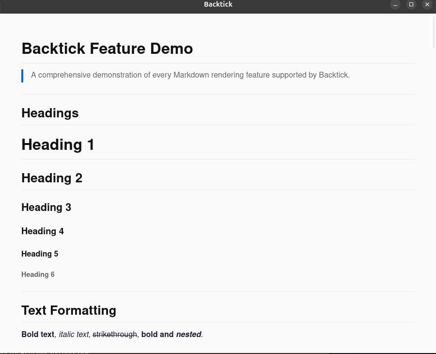

About
Backtick is an uncompromisingly minimal desktop utility built for developers, writers,
and technical readers who need a fast, standalone way to view .md files
without spinning up a heavy IDE or a resource-hogging Electron wrapper.
Built on Tauri, Backtick pairs a high-performance Rust backend with the operating system's native Webview rendering engine, resulting in a tiny binary size, near-zero RAM footprint, and instant startup.
Screenshot
Backtick rendering a Markdown document with syntax highlighting, Mermaid diagrams, and dark mode enabled.

Features
Instant Startup
Launches in a fraction of a second. No splash screens, no waiting, no bloat.
Under 10MB
Built on Tauri with a Rust backend and native webview. Tiny footprint, massive performance.
100% Offline & Private
No telemetry, no analytics, no network requests. Your documents stay on your machine.
Syntax Highlighting
Beautiful code blocks powered by highlight.js with support for dozens of languages.
Mermaid Diagrams
Render flowcharts, sequence diagrams, Gantt charts, and more directly in your documents.
Dark Mode
Easy on the eyes with a carefully crafted dark theme inspired by Ubuntu's color palette.
Download Backtick
Available for Linux, macOS, and Windows. All binaries are code-signed via the SignPath Foundation to ensure authenticity and integrity.
Linux
Ubuntu / Debian (APT)
sudo add-apt-repository ppa:originalmmd/backtick-md
sudo apt update
sudo apt install backtickArch Linux (AUR)
paru -S backtick-binFlatpak
flatpak install flathub app.backtick.ReaderAppImage
chmod +x Backtick-*.AppImage
./Backtick-*.AppImagemacOS
Homebrew
brew install backtickManual
Download the .dmg, mount it, and drag Backtick to your Applications folder.
Windows
Installer
Download the .msi installer and run it. Backtick will appear in the Start Menu.
Winget
winget install backtickBuild from source
git clone https://github.com/originalmmd/backtick.git
cd backtick
npm install
npm run tauri dev # Run in development mode
npm run tauri build # Build for productionProject status
Backtick is an open-source project maintained by the community. Visit the GitHub repository for stars, issues, contribution guidelines, and release history.
Privacy Policy
Backtick does not collect, store, transmit, or share any user data.
- No telemetry, analytics, or crash reporting.
- No network requests or internet connectivity required.
- No account creation, logins, or user registration.
- All files are opened and rendered locally on your machine.
Because Backtick is 100% offline and makes no network connections, there is nothing to track, log, or transmit. Your documents and reading habits remain entirely your own.
License
Backtick is open source under the MIT License.
Built with Tauri, marked, highlight.js, and Mermaid.